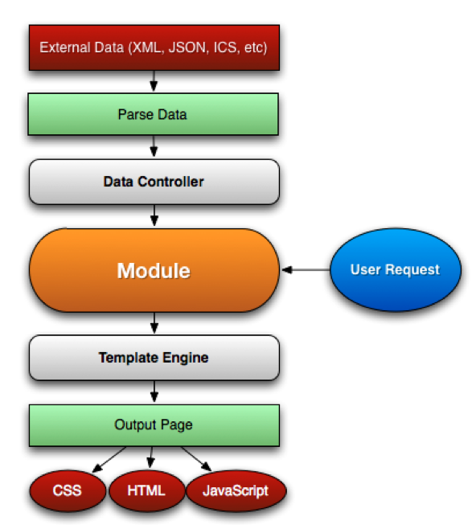

感謝您對「自由軟體鑄造場」的支持與愛護，十多年來「自由軟體鑄造場」受中央研究院支持，並在資訊科學研究所以及資訊科技創新研究中心執行，現已完成階段性的任務。 原網站預計持續維運至 2021年底，網站內容基本上不會再更動。本網站由 Denny Huang 備份封存。
也紀念我們永遠的朋友 李士傑先生（Shih-Chieh Ilya Li）。
也紀念我們永遠的朋友 李士傑先生（Shih-Chieh Ilya Li）。
開源的行動校園和企業內聯網開發平台－Kurogo Mobile Framework
Created at Wednesday, 28 September 2011 13:30 Last Updated on Friday, 18 November 2011 09:41
前言
日文 Kurogo 是漢字黑衣的意思。這個開源平台是 2008 年時，由美國麻省理工學院 (MIT) 數位平台經裡 Andrew Yu 和他的團隊開發出來的。架構的基礎是由開發 MIT 和哈佛行動校園 Apps 的過程中建立，秉持 MIT 一慣的開放知識和程式碼傳統，Kurogo 從出世以來，就以開放原始碼之姿，提供其他大專院校和企業自由下載及使用。從 2010 年 4 月至今，有 112 個組織採用。Kurogo 的架構
Kurogo 是以 PHP 語言編寫。主要的目的是傳遞高品質、客製化資料導向的內容給不同的行動裝置，如 iPhone、Android 等手機及平板電腦。主要想解決學校和企業異質資料庫的問題，透過在伺服器 Kurogo 的架構，不同的資料格式和來源，都可以很簡單、很優雅地呈現在手持裝置上。模組
Kurogo 是由許多單一模組建構而成的架構。如下圖所示。
▲ 圖1: Kurogo 架構圖
當客戶端的請求送來時，會在相關的資料庫中進行查詢，再透過 Data Controller 解析後送至模組。經模組處理後，返回結果給 Template Engine，並以 HTML、CSS 和 Javascript 的形式呈現在網頁上。
裝置偵測
Kurogo 另外一個重要的功能是可以偵測不同的手持裝置。Kurogo 用網頁形式 (page type) 和平台 (platform) 兩種方式來進行偵測。網頁形式主要是運用 CSS、Javascript 及影像處理方式來選定，平台則是使用特定的作業系統或瀏覽器作為判斷基礎。客制化
Kurogo 可以設定不同的資料來源，甚至在 Kurogo 架構上建立自己的模組。在輸出端也可以依照需求或喜愛，修改輸出的呈現方式。以下為使用者介面呈現範例：
▲ 圖2: Kurogo 使用者介面1
▲ 圖3: Kurogo 使用者介面2
▲ 圖4: Kurogo 使用者介面3
補充
如有興趣，可以進一步參考以下網頁：程式碼下載：https://modolabs.com/download-latest.php?type=zip
開發者手冊：https://modolabs.com/kurogo/guide/index.html
加入 iMobileU Google 群組：https://groups.google.com/group/kurogo-dev
關於
Rita Chao 是個愛好科技和自由的射手座女子，今年剛從麻省理工學院畢業，因為熱愛 MIT Mobile App，畢業後，目前在亞州推廣 Kurogo 平台＠Kurogo 是 Modo Labs 公司的註冊商標。
Special


Open Source Software Foundry‧ Best Viewed with IE7.0 or Firefox2.0 above, 1024x768 Resolution. E-Mail：contact@openfoundry.org
Address：No.128, Sec.2, Academia Rd., Institute of Information Science, Academia Sinica, Nangang District, Taipei City 11529, Taiwan (R.O.C).
Privacy Policy. Terms-of-use
Address：No.128, Sec.2, Academia Rd., Institute of Information Science, Academia Sinica, Nangang District, Taipei City 11529, Taiwan (R.O.C).
Privacy Policy. Terms-of-use
Comments